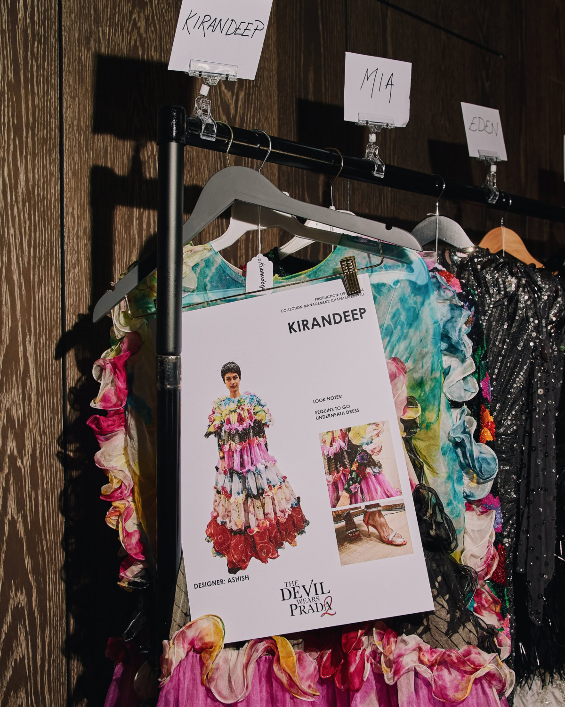

A second red carpet rolled up the steps of Trafalgar Square on Wednesday night and kept unrolling through the Renaissance rooms. The London premiere of The Devil Wears Prada 2 asked the National Gallery to double as a film gala and a British fashion thesis, and for one evening the building obliged with remarkable grace.
The conceit was unsubtle and all the better for it. Disney UK partnered with 10 Magazine to build what the invitation called A Night With Runway, a pun that earned itself by tying the fictional masthead of the film to an actual living-editorial presentation, ten London-based designers cast through the gallery's Sainsbury Wing like commas in a long, confident sentence.
The celebrity carpet arrived first, polite and deliberate in the way these things tend to be when everyone understands the stakes. Anne Hathaway, returning to Andy Sachs twenty years older and, from the looks of things, twenty years more sure of herself, wore a deconstructed Versace tuxedo dress that read as a joke about growing up into the clothes you once looked at from the outside. Meryl Streep, in Prada of course, carried a crystal-studded clutch cut into the shape of the original Runway book, an accessory so on-the-nose it circled back into elegance. Emily Blunt chose custom Balenciaga. Stanley Tucci wore Paul Smith, which felt exactly right. Simone Ashley, new to the sequel and new to the particular logic of this franchise, held her ground in Mugler. Donatella Versace turned up twice, once on the carpet and once again on screen, having accepted a cameo that the film's producers must have framed as inevitability rather than invitation.
A salon, not a catwalk
Inside, the line between film party and fashion presentation dissolved with unusual intelligence. Garth Allday Spencer, styling for 10 Magazine with Sonya Mazuryk and Tommy Dowling, resisted the temptation to stage a runway in the conventional sense. What they built instead was a salon, ten looks arranged as tableaux through the interior, each allowed to speak to the Gainsboroughs and Turners on the walls in its own accent. The effect was slow rather than processional. You could circle a look. You could stand in front of it for the length of a piece of music.
And the music mattered. A live piano score rolled across the rooms at a pace somewhere between waltz and reverie, an editorial choice that kept the staging from tipping into theatre while giving each vignette its own tempo. The gallery handled it all without fuss. Oversized Runway logos were draped along the grand staircase in the kind of blood-red florals you associate with the richer courts in a Veronese. The florists, whoever they were, deserve a credit of their own.
The room was not trying to impersonate a catwalk. It was asking whether British fashion could still hold a salon the way the Italians hold a palazzo, and answering, without fanfare, that it could.
Margaux DelacroixTen houses, one argument
The designer roster was the real editorial decision. Zandra Rhodes opened with a copper-orange gown, sharply pleated and cut with the kind of extended shoulder that demands a room with height. Harris Reed offered a sheer floral frame inside a rigid black border, pure theatre and entirely earned. Richard Quinn answered with a black silhouette so severe that a single white bloom on the bodice read as the whole sentence.
Jenny Packham's contribution was an embellished black gown, softly draped; she has always understood that evening wear is a question about how a dress holds a woman's weight rather than how heavily it announces itself. Roksanda, next in the sequence, showed a tiered feathered fringe banded in black, red and ivory, a piece that read as an argument for colour blocking done slowly. Stella McCartney sent a polka-dot dress paired with a sculptural Stephen Jones hat, which is exactly the correct use of a Stephen Jones hat. Ashish countered with layered tulle in saturated colour, its lighter panels laid over darker underlayers so the whole thing hovered rather than flared.
16 Arlington showed a feathered column. Andreas Kronthaler for Vivienne Westwood supplied a corseted bodice over a mixed brocade skirt, keeping the house's argument about the foundation garment alive without resorting to pastiche. Dilara Findikoglu closed with a shaggy high-collared fur layered over a structured corset and snakeskin trousers, a look that slapped a full stop onto the evening and dared anyone to add another sentence.

Inside the Sainsbury Wing at The Devil Wears Prada 2 premiere. Photography by Pip Bourdillon, courtesy of Disney UK.
What the gallery held
It is easy to be cynical about a film studio partnering with a fashion magazine inside a national institution. The cynical reading is that the Gallery is now a content partner, that a night like this is essentially a brand activation in very good lighting. That reading is not entirely wrong. But it misses the smaller, more interesting thing the evening did, which is to propose that London's designers are still one of the country's more coherent cultural arguments, and that they are most convincing when placed in a setting that refuses to flatten them into a marketing image.
The sequel itself, from what we saw in the cut shown to guests before dinner, feels more tender than its predecessor. Time has done its work on the characters. Miranda Priestly has acquired the slightly wearier elegance of a woman who now understands, completely, that taste is a form of labour. Andy, older, wary, less hungry, is drawn as the kind of editor who knows exactly how much of a story she is allowed to tell. Whether the film will generate a decade of costume references the way the first one did is a separate question. The first film had Patricia Field and a particular cultural moment. The sequel has the weight of nostalgia, which is a different substance and harder to work.
A closing note
The strength of British fashion has always been that it behaves like a salon even when no one is asking it to. There is a reason a gallery turned out to be the right room for this. Rhodes, Westwood, Packham, McCartney, Quinn, Reed, Findikoglu; a list like that is really a list of ways of speaking. The evening did not try to unify them. It let them sit next to one another and trusted the viewer to read the adjacencies.
At the end of the night, guests drifted out past the gold-framed paintings and the last of the florals, and the staff began to strike the set. By morning the gallery will be itself again, Rhodes's pleating and Findikoglu's fur and Reed's black frame packed back into their tissue. But for an evening London's designers were hung alongside the permanent collection and did not look out of place. That is the review.